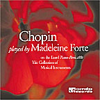

|
|
|||||||
Madeleine Forte's recordings may be ordered from the following:
|
|
|||||||||||||||
|
|||||||||||||||
| REVIEWS AND COMMENTS |
|||||
| MADELEINE FORTE RECORDS CHOPIN
CHOPIN: Polonaise Fantaisie, Op. 61, Sonata in b minor, Op. 58, The Four Scherzos
"Forte offers outstanding accounts of Chopin's music...her command of the keyboard projects power, technical assurance, and sensibility, with phrases and passagework carefully laid out and executed. She plays the outer movements of the sonata with dynamic energy and sails through the Scherzo with ease. "[In her performance of the Chopin Polonaise-Fantasie,] she balances lyricism and rhythmic conviction without overindulging in rubato... "Forte's confident readings of the Scherzos deserve much praise. Each shows uncompromising stamina and clearly defined detail... Her control of articulation in the Scherzo #4 was crisp, and the expressivity throughout the Molto piu lento section of the Scherzo was touching."
"To be a medium for Chopin's musical fantasy, imagination and visions, you have to be in possession of at least two important factors: an exceptional technique and a rich tone. Madeleine Forte is persuasive in that respect! Especially in Chopin's Four Scherzi the listener realizes how the character of the compostion continuously predominates this pianist's playing. Discreet rubato, romantic atmosphere, rich tone, color, poetry, but also drama and violent temper are adequate words regarding Madeleine Forte's Chopin interpretation."
"On my last day in New York I could listen to your CDs and I had a pleasurable time through them. Thank you very much for having sent them to me. I wish you always a wonderful success." Alicia de Larrocha, pianist, "This is Chopin playing, filled with drama and intensity. It is vivid and arresting playing by any standard."
"Madeleine Forte offers a generous Chopin disc. She is a polished artist. In a program that invites comparison with myriad others, she proves a technically-adept, interpretively-secure performer...."
"Madeleine Forte is in some ways a formidable pianist: she has a big technique and a big sound; she attacks all these pieces confidently, and she has a firm conception of each. Here and there her interpretations remind me of Arthur Rubinstein's: e.g., the beginning of Scherzo 1 and much of Scherzo 3."
"Reviewing her previous Connoisseur Society disc, a Ravel recital, Peter Burwasser mentions her "quicksilver approach" and her "emphasis on texture and color, subdued dynamics, and a treble-dominated tonal balance." Well, she has taken a different approach on these large-scaled Chopin masterpieces. She plays with a large, full-bodied tone, with great power and even majesty. At the same time Forte is able to "transmit" (a T.S. Eliot phrase) the quicksilver passages convincingly, with the beautifully realized legato on which Cortot insisted. The dancing Scherzo of the sonata is an example, and so is the impressively powerful and precisely played opening of the Scherzo in B minor. These robust performances are nonetheless nuanced, controlled, and unaffected. Beautifully recorded, they should be heard."
|
LISTEN: Excerpt from Polonaise-
Download Apple's Quicktime |
||||
MAURICE RAVEL RAVEL: Sonatine, Miroirs, Pavane pour une infante défunte, Gaspard de la Nuit, Jeux d'eau "At a time when national styles have all but dissoved into a generalized international goulash, Forte's gorgeous tone and sensuous line evoke classic French pianism...her Maurice Ravel holds its own against interpretations by many of her more celebrated peers, from the chaste simplicity of the Sonatine to the virtuosic 'Gaspard de la Nuit,' in which no prisoners are taken and no notes are dropped."
"This is a wonderful Ravel-recording! Madeleine Forte's technique is exceptional; so is her tone. The pianist is absolutely in command of her instrument. In Scarbo, this French pianist meets the clear but cruel demands of the quicksilver fingerwork in her sparkling interpretation. The delicacy of Jeux d'eau provides the emotional core of the reading. In Le gibet, the listener experiences an interpretation rich in inspiration and sensitivity. In Forte's excellent and seductive playing, her native music becomes architecture with passion. " Kultur Speilet " . . . . her tonal resources are impressive as she pours forth some ravishing playing . . . . . .Gaspard de la Nuit is quite imposing in Mme. Forte's hands. . . Jeux d'eau sparkles and the Sonatine is appropriately fresh in this pianist's readings.
"[Madame Forte] is an extraordinary pianist, with virtuosic fingers. In this CD… virtuosity is always in the service of the music. In Alborada del gracioso, the difficult passages… are played brilliantly. And in the fortissimo sections the sound is always rich… These qualities are present in each piece included on the CD. I strongly recommend that you make this CD part of your collection of fine piano music."
" Here is a nicely packaged hit parade of Ravel's solo piano music, in vibrant, intensely affectionate renditions… Forte plays in a classic French manner, with great emphasis on texture and color, subdued dynamics, and a treble dominated tonal balance… a quicksilver approach… straightforward and intelligent playing… For those seeking a nice trove of basic Ravel piano music to drop into a collection, this Forte project fits the bill quite nicely.
Ravel's Sonatine, Miroirs, Gaspard de la nuit (three of his most important piano works) and Pavane are impressively played by Madeleine Forte (CD4226). TUROK'S CHOICE: |
|
||||
CLAUDE DEBUSSY Images I & II, Pour le piano, Three Etudes, L'Isle joyeuse "Madeleine Forte shows once again, as in her Ravel CD, that she is a master of French style. It is vital and exciting playing, and always with a keen awareness of Debussy's special world of sonority. I recommend it enthusiastically."
"The recording gives the impression of hearing an intimate performance in a living room as Forte evokes a beautiful sonority through strong technique.... In ‘Reflets dans l'eau’ from Images, Book I, and ‘Cloches à travers les feuilles’ from Images, Book II, Forte brings out the different musical planes in expressive detail. The contours of the lines are clear and distinct as she creates orchestral colors with the piano.... "Toccate" from Pour le piano shows a flexible approach to style. The performance is close to the Baroque toccata, with almost no pedal or ritardando. The music is clear, showing the link between Debussy and the music of the past."
"Madeleine Forte shows great mastery and 'une élégance exceptionnelle'...[She] has achieved a Debussy-interpretation in which she brings to light a rare musicianship. This French pianist is in the capacity of seductive musical gifts....On the one hand, Madeleine Forte interprets her Debussy with light touch and delicacy; on the other hand, when the music requires it, chords and arpeggios are handled with vigour and strength."
"If we agree that some of the acknowledged masters of the French School included Cortot, Saint-Saëns, Darré, and Robert and Gaby Casadesus, and that we should take their recordings, teachings, writings, and interviews seriously, then we can reasonably suggest that this school is founded upon clarity of texture, meticulous preparation, fastidious execution (yes, even Cortot during his prime), and a lean, attractive sonority. Judged by these standards and by the CD in front of me, Madeleine Forte is another master of the French School, and their equal. She plays Debussy in a manner that would do her old master Cortot proud, with a clear-eyed vigor, pearlescent tone, and attention to detail that does not belie the emotional content of the music but only makes it more coherent.... "Forte gives us the composer in his entirety—the elegance and the charm, but also the magnificent rhetoric, the revolutionary ideas, the harmonic and technical hurdles as clear and fresh as they were when Debussy walked home with bread under his arm for Emma Bardac and his little Chou-chou. "Constant attention to the logical progression of the music is the most observable feature I've heard in Forte's Debussy. She clearly follows Cortot's dictum that any phrase in a composition should be viewed as a continuing musical dialectic, and should function within time as part of the continuity. Her Debussy isn't a walk through a terrain whose only features lie in proximity to their ostensible dramatic goals. There are no throwaway passages, either interpretatively or technically, in Forte's work. Everything contributes to the effect of the whole. "It's also clear from her playing that Madeleine Forte has the chops to perform just about as fast as she wants, but she doesn't, sacrificing velocity for clearly articulated passagework. This is nowhere more apparent than in the Toccata from Pour le piano, which under Forte's ministrations (and thanks to her spare pedaling) emerges with a level of harmonic and figurative detail that it all too often lacks in the care of performers who wish to impress. Well, Forte impresses too, just not in the same way.... "The piano sound on this release is strong, forward, and natural...Liner notes were provided by Allen Forte, the pianist's husband and Battell Professor of Music at Yale University. They are excellent of their kind, in which a thematic analysis is presented of each piece.... "I'm quite pleased with this release. It's my first exposure to Madeleine Forte's fine musicianship, and, if her Debussy is at all typical, I look forward to hearing many more releases of hers in the future."
|
 LISTEN: |
||||
OLIVIER MESSIAEN with commentary by Allen Forte Five of the Préludes (1929) "On this well-conceived disc, musicologist Allen Forte (Battell Professor of Music at Yale University) discusses Messiaen's piano music, focusing on two cycles: the Préludes of 1929 and Vingt Regards sur L 'Enfant-Jésus of 1944. His wife, the accomplished pianist Madeleine Forte, plays five of the former and six of the latter....Madeleine Forte's demonstrations are crisply delineated...highly suitable to this more pedagogical context. Allen Forte provides context and detailed explications of the specific pieces, his tracks sensibly alternating with his wife's....Highly recommended to all aficionados of French culture, the piano, or 20th century music." (Click here for the full review.)
"Once again Madeleine Forte gives us a product of wonderful piano music. Messiaen's music is above all increasingly peculiar and hard to play, especially with respect to its rhythm. The manipulation of psychological time and the control of phrasing are only two of the many fascinating aspects of the music of Olivier Messiaen. Forte's superiority regarding rhythmic finesse is persuasive in this music. In addition to the composer's rhythmic manipulations and great demands of timbre, dynamics and attack types, the poetic atmosphere and mystery is of utmost importance to Messiaen. It is a great pleasure to tell that Madeleine Forte fulfills every expectation. In addition to her impressive and intelligent interpretation, this CD is a highly interesting project: The informative commentary of professor Allen Forte contributes to a pedagogic introduction to the music of Olivier Messiaen!"
"Madeleine Forte's performances are limpid and attractive, and the recorded sound clear. She plays her Messiaen evidently with the knowledge or intuition that the composer derived much of his style of piano-writing from Chopin."
"The release is thoughtfully prepared and expertly realized...with spoken comments interlaced so as to introduce each of the eleven recital pieces, six of them from the masterful VINGT REGARDS SUR L'ENFANT-JESUS. Allen Forte has prepared his material carefully and, although his bent is analytical, he astutely keeps his comments well within the grasp of any reasonably aware person who is likely to consider listening to a Messiaen lecture-recital in the first place. Stick with him and you'll start to glimpse what makes Messiaen's music tick. Listen to Madeleine Forte's performances, and you'll also hear what makes Messiaen's music tick. Descended from classic French piano playing--Alfred Cortot was one of her teachers--she informs the music with pellucid tone and intellectual rigor. In this context, the music is not allowed to simply pass by as a succession of attractive pieces; the listener is guided towards specific modes of listening thanks to the interpolated lecture."
"Pianist Madeleine Forte commands a formidable technique that well serves Messiaen’s polytextural sound world. In the six Vingt Regards selections, for instance, Forte balances the chordal pillars in the piano’s low register so that they support yet don’t overpower the composer’s more fanciful treble flourishes (the Noël movement’s middle section provides an exuberant case in point). Allen Forte’s perceptive and informative commentaries are . . . matched by his emotionally detached . . . delivery."
"Madeleine Forte beautifully projects the style of the composer in the first prelude, ‘La colombe,’ and the melody in octaves in the middle register of the piano comes through clearly as she plays raindrop chords in the upper register. A succession of chords in parallel motion unfolds in the accompaniment. These independant layers of sound can also be heard in the second of the preludes, ‘Chant d'extase dans un paysage triste.’ The beginning opens with a simple melody and accompaniment in quarter notes, with a clear distinction between the pp lower voices and the upper p voices even though the two lines are close in register. This stratification intensifies with the melody in the middle chords in the high register ppp. Forte's control in bringing out each voice makes the various levels of sound dimensional.
|
 LISTEN: Excerpt from Préludes: Excerpts from Vingts Regards: |
||||
FRÉDÉRIC FRANÇOIS CHOPIN A recital played on two historic pianos in the Yale University Collection of Musical Instruments, 22 April, 2001 Click on the links below to hear excerpts. Piano by Pleyel (1842):
Piano by Érard, Paris, 1881: "You are a fine sensitive artist! I liked especially the Etudes and Nocturnes, but this does not mean that some of the preludes aren't also beautifully played."
"Recently in these pages, I reviewed Madeleine Forte's lovely recording of the Chopin scherzos. Now she is back on another label, with an interesting recital recorded on an historic instrument, an 1881 Erard. The instrument is owned by Yale University, and Forte played precisely this recital live at Yale. The recording was made a few days earlier. The Erard was a favorite of Ravel, but its crucial mechanism was patented in 1821. Hence, though it was later improved, the instrument existed in Chopin's time. It has, we are told, a light action. What we hear is a fast decay in the notes that allows for exceptional clarity of sound in even the thickest passages. The tone has that slightly wooden sound we hear in fortepianos, but nowhere near the brilliance of a Steinway.
"Madeleine Forte plays a wide assortment of Chopin on an Erard piano made in Paris in 1881 and now housed at Yale University. The instrument was built long after the composer's death but is in a tradition with which he was familiar. It sounds very different from modern instruments. Its primary advantage is clarity. Here you can hear all the lines separately and clearly, although the sounds blend, too. Ms. Forte tries to follow the composer's own idea about rubato — keeping the left hand in more or less strict tempo while letting the right push ahead and catch up. The music — the Ballade No. 4, the Barcarolle, some etudes and nocturnes and mazurkas as well as the famous A major Polonaise — takes on a new freshness."
"As with her previous all-Chopin recital (recorded on a modern concert grand and issued by Connoisseur Society), Madeleine Forte largely proves to be an insightful, idiomatic interpreter. She paints the Fourth Ballade in intimate rather than heroic colors and easily glides through the main theme's increasingly elaborate repetitions without sounding rushed...Forte admirably contrasts the F Major or Op. 15 No.1 Nocturne's calm outer sections with the tumultuous middle interlude...she totally nails the B-flat minor Prelude's taxing patterns and beautifully characterizes the other five selections from Op. 28...the A-flat Polonaise benefits from Forte's firm rhythms and carefully shaped climaxes, her lithe, ethereal C-sharp minor Prelude and Mazurkas Op. 17 Nos. 2 and 3 might easily escape your attention the first time around. Worth hearing."
"It´s no exaggeration to say that Madeleine Forte´s recording helps to increase our knowledge and understanding of Chopin´s musical imagination and dreamlike landscape. The nocturnes and préludes are among Chopin´s most intimate works. Forte´s pianissimo, her singing rubato, and poetic interpretation are crucial components in this regard....Forte´s strong technique and her mature musical talent articulates the music´s varied atmospheres and moods in the most persuasive way....Forte´s confident readings of Ballade No. 4 and Barcarolle Op. 60 are characterized by expressiveness in detail, sensitivity as well as drama, intensity, and awareness of form."
"Madeleine Forte is a technically well-equipped artist, with the imagination to marshal and subdue her considerable forces...broad conception and dramatic power of the C.D. CHOPIN, played on an Erard piano in 1881, and now part of the Yale Collection of Musical Instruments...Her readings sometimes reach the level of Alfred Cortot, one of her important teachers, and summon on occasion the ghost of Artur Rubinstein, as in her Grande Polonaise in Ab, Op.53.
"It is illuminating in an entirely different way to hear Chopin's music on a piano of his time, which the fine, scholarly French pianist has done on a charming, chiming 1881 Erard instrument."
|
 |